BTE CTF GMI 2025
2nd Runner-Up
Solo: Kiellu4

Note: Published after the competition ended.
Obfuscator
Obfuscator · 50Curse Program
Challenge
The challenge supplied an obfuscated JavaScript file that did not resemble normal source code. The goal was to recover the value hidden by the program and submit it using the BTE format.
First look / analysis
I began with Cipher Identifier because the file was clearly not ordinary JavaScript. It identified JSFuck; an initial decode only produced alert 0, so I moved to a dedicated decoder for the complete program.
Inspect the attachment
The Curse Program page provides the JavaScript attachment and states that it has been cursed. I used the file itself as the starting evidence instead of executing an unknown program locally.
That made identifying the obfuscation style the first practical step.
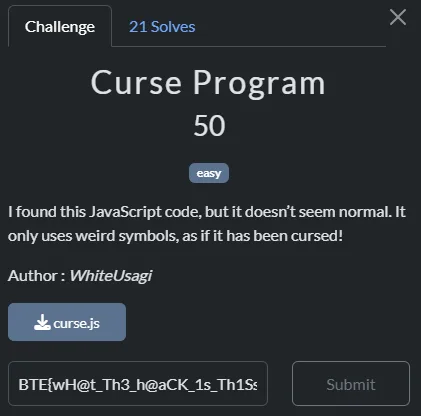
The challenge supplies the heavily obfuscated JavaScript file. Identify JSFuck
I pasted the content into Cipher Identifier. Its result identified JSFuck, explaining why the program is built from unusual JavaScript punctuation rather than readable statements.
This narrowed the solve to an appropriate decoder instead of trying unrelated classical ciphers.
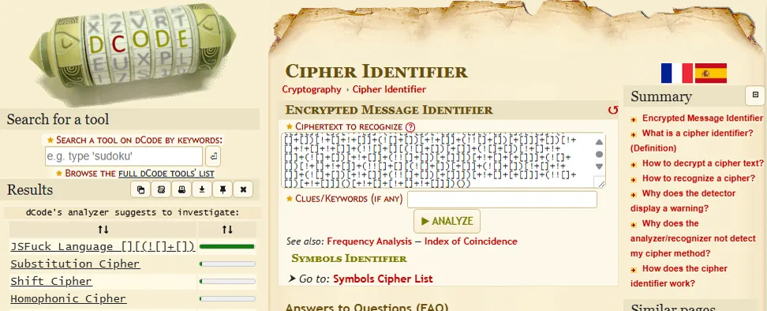
The initial analysis begins by identifying the unusual source. 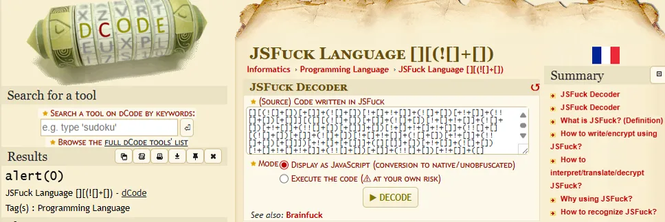
The identifier reports JSFuck as the obfuscation language. Decode the complete program
Because the first result was not the final value, I used Wanna Decode JSFUCK with the complete pasted program. The decoder revealed the text needed for the BTE submission.
Using a decoder also avoided running the untrusted attachment just to inspect its output.
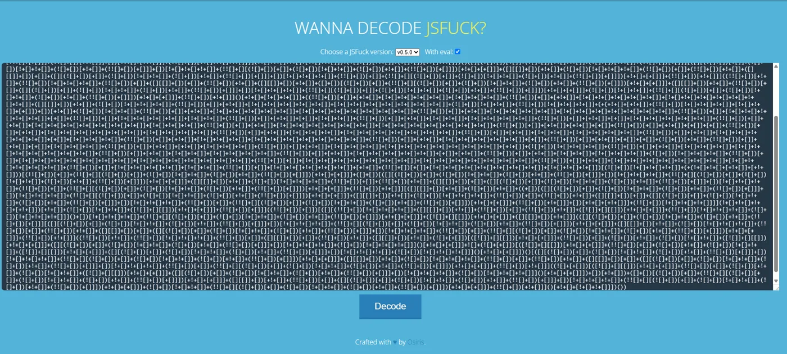
The full program is passed to a dedicated JSFuck decoder.
Result
Decoding the JSFuck source recovered the text used in the final submission.
Flag
BTE{wH@t_Th3_h@aCK_1s_Th1Ss??}Tools used: Cipher Identifier, Wanna Decode JSFUCK. What I learned: Recognising an obfuscation language is more useful than guessing at its result. A dedicated decoder can inspect an unfamiliar script without executing it.
Obfuscator · 50Garam dan Madu
Challenge
The supplied script.py produced a key binary, flag binary, and ciphertext. The task was to decode the binary representations, use the supplied key, and reconstruct the required flag.
First look / analysis
I ran the script first and noticed every field was expressed as binary. After converting them, the ciphertext still differed from the other values; because a key was provided, XOR was a better fit than Vigenere.
Run the supplied script
I opened the challenge and ran script.py to see which material it exposes. Its output clearly separates key binary, flag binary, and ciphertext.
The named key indicated that it would be required by the final operation.
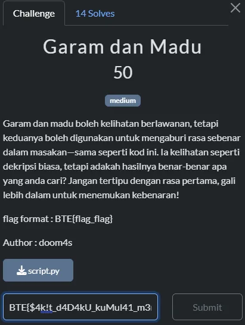
The challenge provides the Python script used to expose the encoded values. 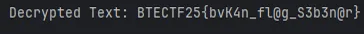
Running the script reveals the data that must be decoded. Decode each binary value
I copied key_binary, flag_binary, and ciphertext into CyberChef and used Binary decoding on each one. Normalising all three inputs was necessary before selecting a cipher operation.
The ciphertext did not look like the ordinary decoded fragments, which confirmed that another transformation remained.
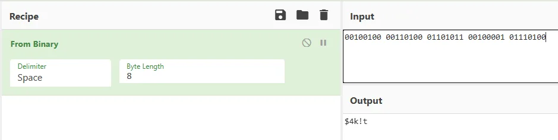
The key is converted from binary before it is reused. 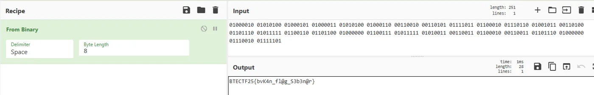
The flag binary is decoded independently. 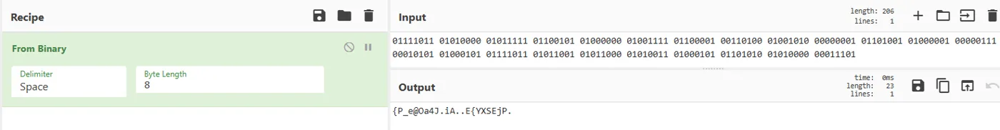
The ciphertext is also converted out of binary. Apply XOR with the recovered key
I ruled out Vigenere because the input was not alphabetic text and applied CyberChef XOR with the decoded key. This produced the remaining text, which I combined with the decoded flag portion.
The resulting string matches the value required by the BTE flag format.
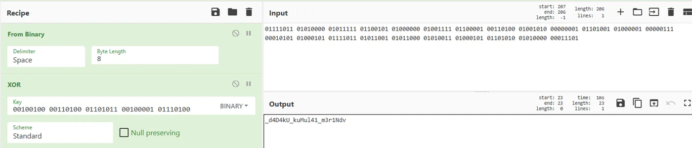
The decoded key is supplied to the XOR operation. 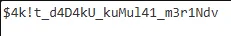
The result provides the final recovered text.
Result
Binary decoding followed by keyed XOR recovered the challenge value.
Flag
BTE{$4k!t_d4D4kU_kuMul41_m3r1Ndv}Tools used: Python, CyberChef Binary, CyberChef XOR. What I learned: Always normalise an encoded representation before choosing a cipher. A supplied key is a strong clue, but the operation must match the data type.
Hashing
Hashing · 50TRSB 4: Garam MadDelima
Challenge
The script.py challenge asks for a salt at the Masukkan salt prompt and contains an obfuscated salt plus salt_key. The objective is to recover the right salt and let the script reveal its flag value.
First look / analysis
I ran the script to see the missing input. The obfuscated salt is accompanied by a key, so I tested XOR; the shown salt_key is decimal 42, which had to be represented appropriately for the operation.
Inspect the salt prompt
I ran the supplied script and confirmed it waits for a salt. This kept the work focused on the obf_salt and salt_key values rather than guessing arbitrary passwords.
The source material makes the intended relationship between the two values clear.
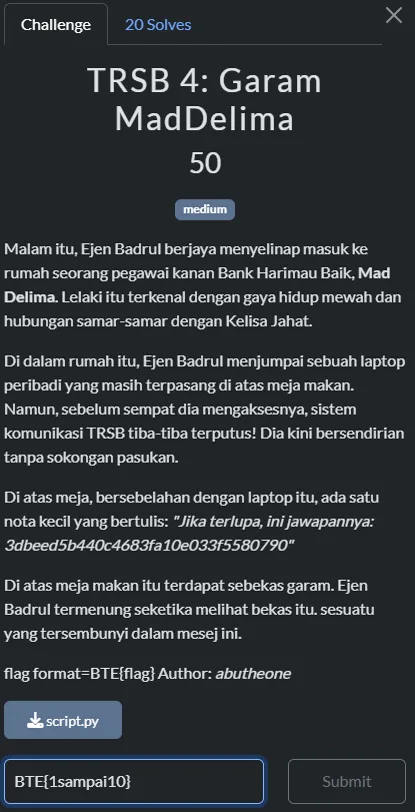
The challenge provides script.py and asks for a recovered salt. 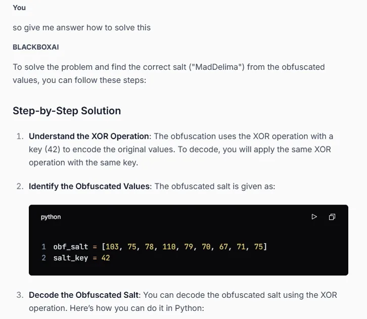
The source analysis highlights the obfuscated salt and key. 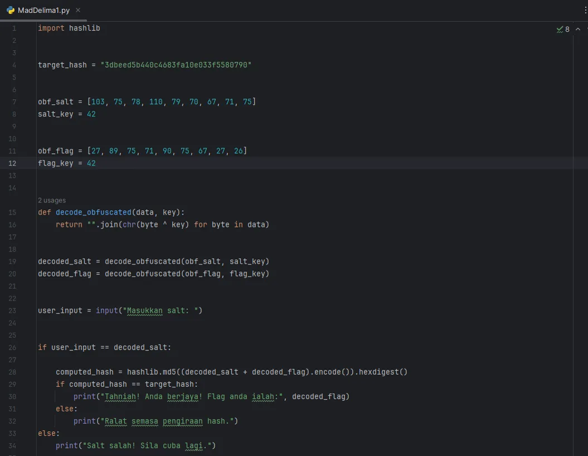
The supplied script shows the obfuscated salt and flag arrays, both using key 42. Test XOR and convert the key
Cipher Identifier offered several candidates for the obfuscated value, but the provided key made XOR the relevant one. I then converted decimal 42 into hexadecimal 2a and used the repeated form 2A2A2A as the XOR key.
Converting the decimal value was necessary because the XOR tool works on the byte representation.
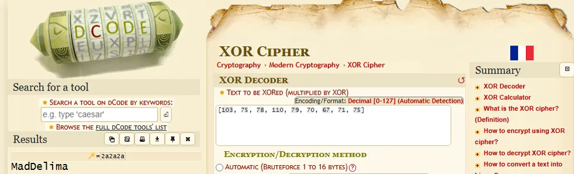
The provided key makes XOR the relevant hypothesis. 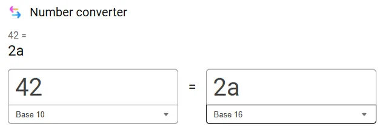
The key is converted before the XOR operation. Recover MadDelima and rerun the script
The XOR operation with 2A2A2A revealed MadDelima. I reran script.py and entered that exact salt at the prompt.
The program returned 1sampai10, which becomes the required BTE-formatted submission.
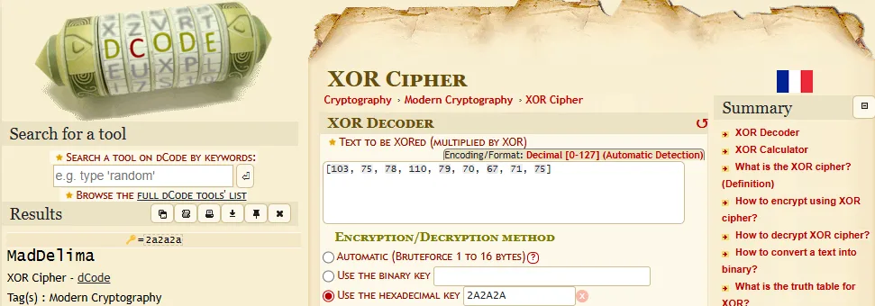
The XOR result provides the salt for the final script run. 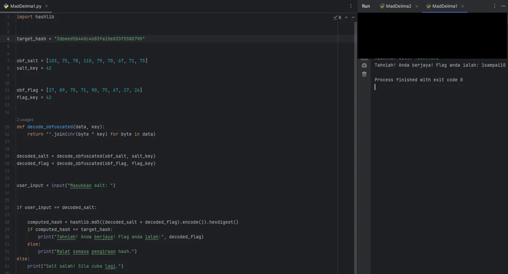
After entering the recovered salt, the script reports success and prints 1sampai10.
Result
Entering the recovered salt made the supplied script print the final value.
Flag
BTE{1sampai10}Tools used: Python, Cipher Identifier, number-base converter, CyberChef XOR. What I learned: A decimal key may need a base conversion before a byte-oriented operation. Running a supplied script early identifies the one value that actually needs recovery.
Hashing · 50Password1
Challenge
The challenge presented a login service and a password hash. The task was to identify the hash type, recover its plaintext, and authenticate to retrieve the flag.
First look / analysis
The value has 64 hexadecimal characters, which strongly suggested SHA-256. I therefore used a SHA-256 lookup workflow instead of treating the hash as reversible encryption.
Inspect the login materials
I started from the challenge page and the credential clue. The context is a login service, so the hash must be validated by submitting a recovered password rather than simply decoding text.
The observed 64-character hexadecimal shape provided the main identification clue.
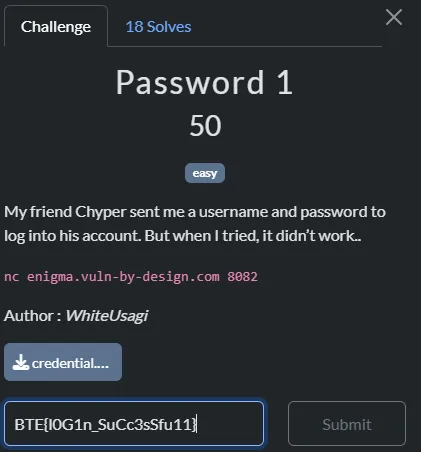
The page establishes the login and password-recovery task. 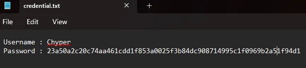
The supplied credential material contains the value to identify. Look up the SHA-256 hash
I treated the 64-character hexadecimal value as SHA-256 and used a SHA-256 hash lookup tool. It recovered the plaintext Enigma.
This fits hashing workflow: the original is found or verified, not decrypted as a cipher would be.
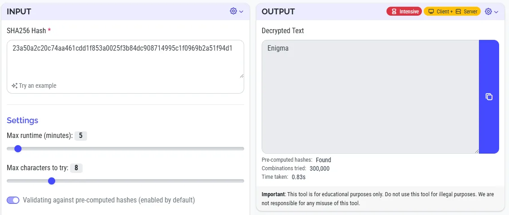
The hash lookup identifies Enigma as the password. Authenticate with the recovered password
I replaced the password with Enigma in the login service. The successful login response displayed the BTE flag.
This final check confirms that both the hash type and plaintext were correct.
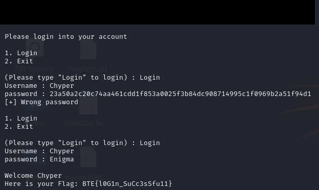
The service accepts Enigma for user Chyper and returns the flag.
Result
The recovered password authenticated successfully and returned the flag.
Flag
BTE{l0G1n_SuCc3sSfu11}Tools used: SHA-256 hash lookup tool. What I learned: Hash length and alphabet are useful first indicators of its likely algorithm. Always validate a recovered password in the intended application flow.
Hybrid
Hybrid · 50Surat Cinta
Challenge
Surat_cinta.txt contains an encoded message. The objective was to identify the encoding layers and keep decoding until the BTE-formatted value was exposed.
First look / analysis
Cipher Identifier recognised Base64. I decoded one layer, inspected the result, and saw that another encoded line remained, so I repeated the same operation.
Identify the attachment as Base64
I opened the challenge and sent the Surat_cinta.txt content to Cipher Identifier. It recognised Base64, providing a justified first operation.
The encoded character pattern and tool result—not the challenge title—determined the starting point.
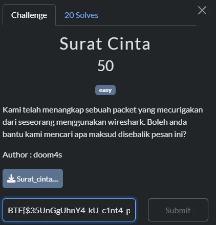
The page provides Surat_cinta.txt for analysis. 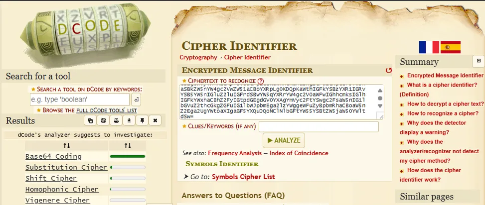
The identifier confirms the first decoding layer. Decode the first layer
I used CyberChef From Base64 on the supplied content. The result still contained an encoded-looking line, so stopping after a readable transformation would have been premature.
I retained the intermediate output for a second pass.
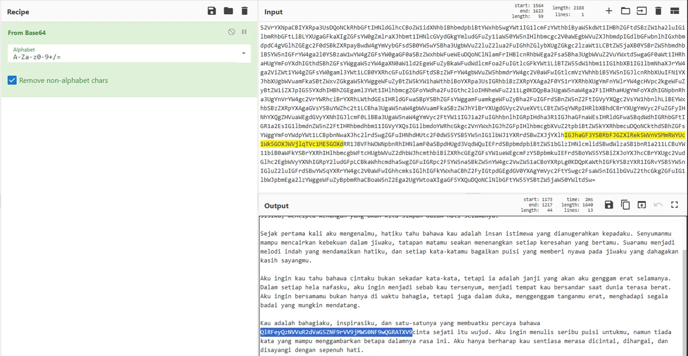
The first decode exposes another encoded value. Decode the remaining layer
I applied From Base64 again to the remaining line. The second decode revealed the complete value in the expected BTE format.
No extra cipher was required after that result.
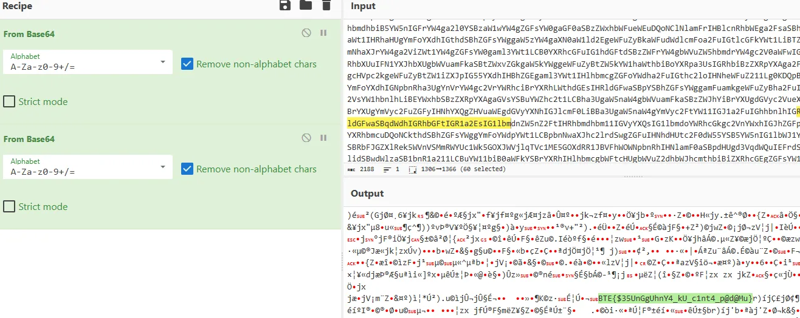
The second Base64 pass reveals the final flag.
Result
Two Base64 decodes recovered the flag from Surat_cinta.txt.
Flag
BTE{$35UnGgUhnY4_kU_c1nt4_p@d@Mu}Tools used: Cipher Identifier, CyberChef From Base64. What I learned: Encodings can be layered. Inspect each intermediate result instead of assuming that the first successful operation is the end of the chain.
Hybrid · 450Hantu
Challenge
The flag.txt input was protected by three layers. Its hint says passwords can have more than one meaning, and the visible password hantudanbaken supplies two semantic clues for the chained solve.
First look / analysis
The reference to three encryption types led me to begin with Vigenere. Hantu means ghost, which pointed to GOST for the second step; baken then pointed to Bacon cipher for the final step.
Read the three-layer hint
I opened flag.txt in CyberChef and read the hint before changing the data. It explicitly says three encryption types are required and says that passwords can have more than one meaning.
I split hantudanbaken into hantu and baken rather than treating it as one literal key.
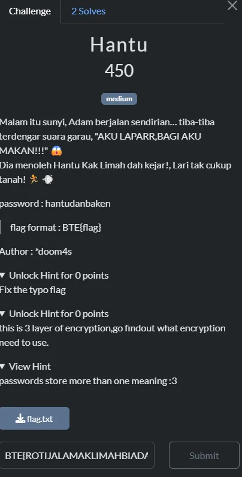
The challenge presents the multi-layer flag.txt task. 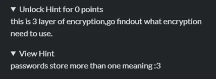
The hint establishes both the number of layers and the split clue. Decode with Vigenere and GOST
I used Vigenere Decode first because the description referred to a password. The output was still encoded, so I used the ghost meaning of hantu to search for GOST and appended GOST Decrypt.
The second result was still not final, which agreed with the three-layer instruction.
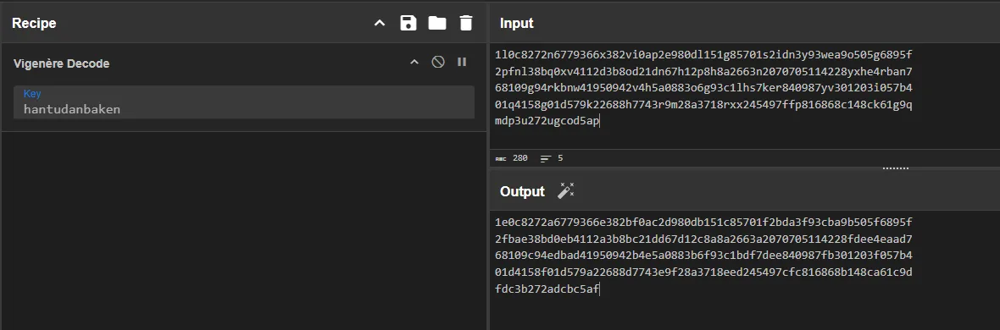
Vigenere Decode is used for the first layer. 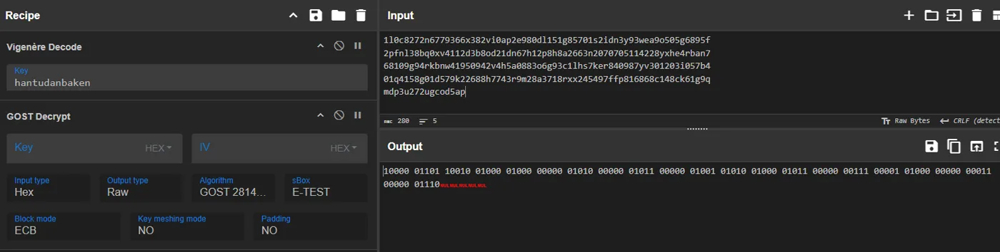
GOST is selected from the ghost clue for the second layer. Finish with Bacon Decode and correct the typo
The baken part led me to Bacon Cipher Decode. It produced ROTIIALAMAKLIMAHBIADAP, which was close but not accepted.
The hint says to fix the typo, so I changed the extra I to J in the known phrase and submitted ROTIJALAMAKLIMAHBIADAP.
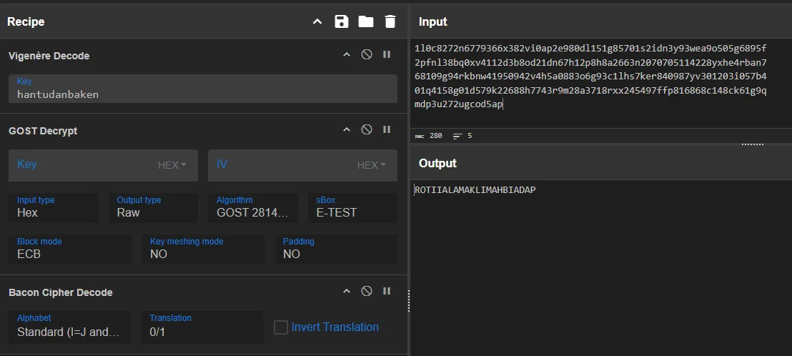
Bacon Decode produces the near-final phrase; the hint explains the final correction.
Result
The Vigenere, GOST, and Bacon sequence produced a typo-marked phrase that the final hint corrected.
Flag
BTE{ROTIJALAMAKLIMAHBIADAP}Tools used: CyberChef Vigenere Decode, GOST Decrypt, Bacon Cipher Decode. What I learned: Titles and passwords can be semantic cipher clues rather than only literal keys. Preserve intermediate results and revisit the hint whenever a plausible value fails submission.
Symmetric Encryption
Symmetric Encryption · 200TRSB 1: Memutar Info
Challenge
The challenge gave ciphertext t9c9s_evmv_c8mvn_wjh8o8s8 and a clue connected to 25. The task was to choose the correct rotation settings and recover the flag text.
First look / analysis
The hint suggested ROT25. The first output had the right words but wrong digits, showing that letter rotation alone was insufficient and that the number option mattered.
Start with ROT25
I entered the ciphertext into CyberChef and used ROT with an amount of 25, following the challenge clue. The first output was structured and nearly readable, which confirmed the rotation choice.
However, its digits still did not match the intended phrase.
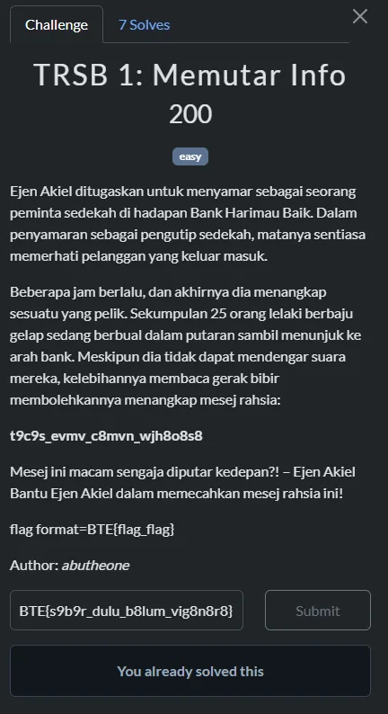
The page supplies the ciphertext and its clue related to 25. 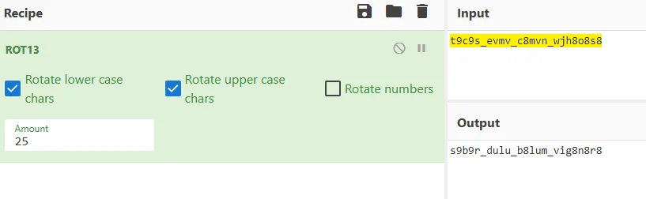
The near-readable output shows that a setting is still missing. Enable digit rotation
The first result was s9b9r_dulu_b8lum_vig8n8r8. Because the ciphertext includes digits, I enabled Rotate numbers while keeping the rotation amount at 25.
This changed the output to s4b4r_dulu_b3lum_vig3n3r3, the value required by the flag format.
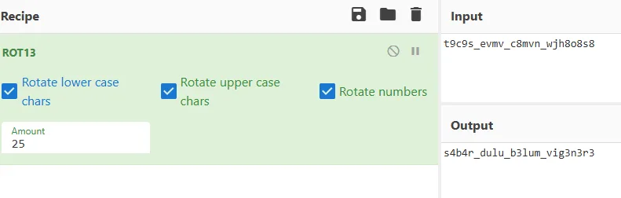
Enabling digit rotation yields the final readable result.
Result
ROT25 with number rotation enabled recovered the intended plaintext.
Flag
BTE{s4b4r_dulu_b3lum_vig3n3r3}Tools used: CyberChef ROT. What I learned: ROT tools can treat letters and digits separately. A near-readable output is a signal to check options before abandoning the cipher hypothesis.
Symmetric Encryption · 50TRSB 2: Nota Tersembunyi
Challenge
The challenge supplied nota.txt with encrypted content and the readable clue kelisajahat. The objective was to identify the cipher and apply the relevant key to obtain the final plaintext.
First look / analysis
Cipher Identifier returned multiple possibilities. I selected Vigenere because it fit the text and because kelisajahat remained as a meaningful untransformed string that could act as a key.
Identify a candidate cipher
I copied the note into Cipher Identifier. Rather than trying every reported result, I compared the candidates with the readable clue included by the challenge.
Vigenere was the most useful candidate because the clue looked like a passphrase.
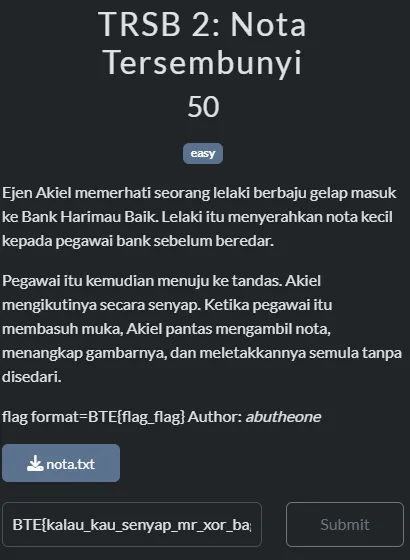
The challenge provides nota.txt and the kelisajahat clue. 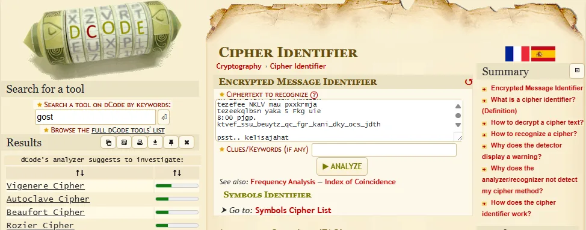
The tool provides candidate ciphers for the note. Decode with kelisajahat
I used CyberChef Vigenere Decode and set kelisajahat as the key. I chose it because it was the visible text that was not itself encrypted.
The result produced the readable message used in the BTE submission.
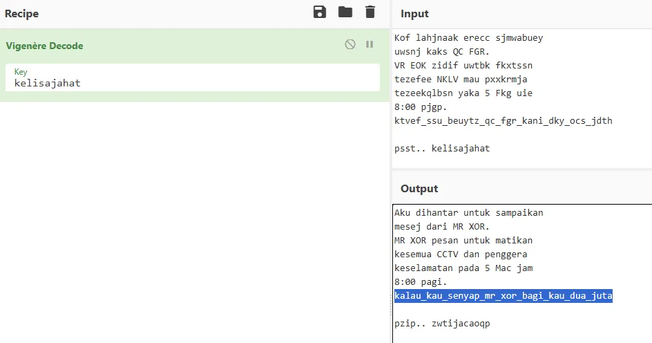
The provided word is used as the Vigenere key to reveal the flag text.
Result
Vigenere Decode with the clue as key recovered the flag text.
Flag
BTE{kalau_kau_senyap_mr_xor_bagi_kau_dua_juta}Tools used: Cipher Identifier, CyberChef Vigenere Decode. What I learned: A readable word placed beside ciphertext may be an intended key. Use challenge context to narrow a broad list of identifier candidates.
Symmetric Encryption · 400Kereta Api
Challenge
The challenge hides a clue in an image and its description includes the number 8. Selectively viewing the image revealed KU3LR43LT_41_P4; the task was to identify the matching cipher and key.
First look / analysis
After other suggestions failed, I used the title's train meaning to look for a train-related cipher. Rail Fence fit the theme, but the initial output was wrong until I used 8 from the description as its key.
Reveal and transcribe the visual clue
I covered the right side of the screen and noticed that the left side contained the capital letters and digits. I transcribed them as KU3LR43LT_41_P4.
I also checked the picture with exiftool, but it had no useful metadata, so the visible clue remained the intended input.
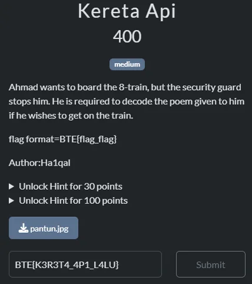
The challenge introduces the image-based clue. 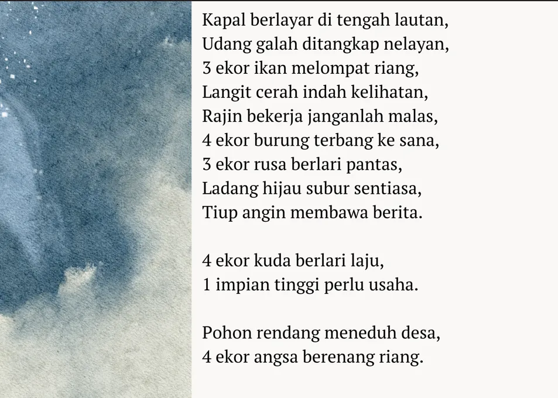
The image produces the ciphertext after selective viewing. Use the train theme to select Rail Fence
Kereta Api translates to train, so I searched for train-related ciphers and selected Rail Fence Cipher Decode. I entered the transcribed text into the Rail Fence recipe.
The first output was not correct, so the cipher choice needed a parameter adjustment rather than replacement.
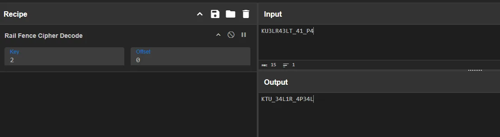
The train-themed Rail Fence cipher is tested against the transcribed clue. Set the key to 8
I revisited the description and noticed the number 8. I set the Rail Fence key to 8 and reran the decode.
The output became K3R3T4_4P1_L4LU, which I wrapped in the BTE format.
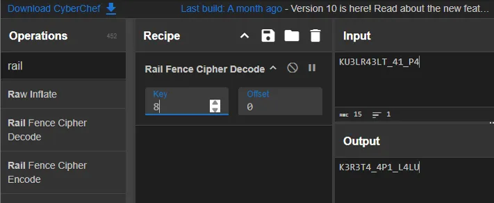
The key value 8 produces the final readable output.
Result
The visual clue, Rail Fence cipher, and key 8 recovered the final value.
Flag
BTE{K3R3T4_4P1_L4LU}Tools used: Visual inspection, exiftool, CyberChef Rail Fence Cipher Decode. What I learned: Visual challenges may hide their useful data in plain sight, not metadata. When a themed cipher nearly fits, revisit the description for its key parameter.